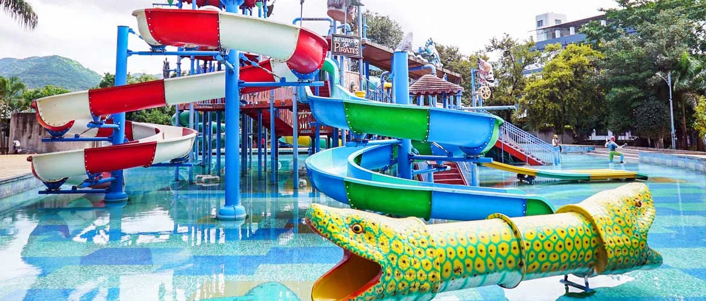

Amusement Parks in Pune!
Appu Ghar
Location:
Appu Ghar is situated in the Nigdi area of Pune, near the Mumbai-Pune Expressway.
Attractions:
The park offers a variety of rides and attractions suitable for people of all ages. These include thrilling
rides like roller coasters, water rides, carousel, bumper cars, and various other family-friendly rides.
Entertainment:
In addition to rides, Appu Ghar also features entertainment options such as live
shows,
musical performances, and other events.
Dining:
There are food stalls and restaurants within the park premises offering a variety of
snacks,
beverages, and meals to cater to visitors' culinary needs.
Ticketing:
Tickets for Appu Ghar can be purchased at the park's entrance or through online booking
platforms. They may offer different ticket options based on the age of visitors and the type of access
desired
(e.g., entry-only tickets or tickets including unlimited rides).
Operating Hours:
The park's operating hours may vary depending on the season, day of the week, and
any
special events. It's recommended to check their official website or contact them directly for the most
up-to-date information on operating hours and closures.
Safety Measures:
Like any amusement park, Appu Ghar emphasizes visitor safety. They have safety
guidelines, trained staff, and maintenance protocols in place to ensure a safe and enjoyable experience for
all
visitors.
Diamond Water Park

Location:
Diamond Water Park is situated in Lohegaon, which is in the eastern part of Pune city.
Attractions:
The park offers a variety of water-based attractions and rides suitable for visitors
of
all ages. These include water slides, wave pools, lazy rivers, kids' play areas, and other water-based
activities.
Entertainment:
Apart from the water rides, Diamond Water Park also offers entertainment options
such
as live DJ music, dance performances, and other events to keep visitors entertained throughout their visit.
Dining:
There are food stalls and snack bars within the park premises offering a variety of food
and
beverage options for visitors to enjoy during their time at the water park.
Ticketing:
Tickets for Diamond Water Park can be purchased at the park's entrance or through
online
booking platforms. They may offer different ticket options based on factors such as age, group size, and any
special promotions or packages available.
Operating Hours:
The park's operating hours may vary depending on the season, day of the week, and
any
special events. It's recommended to check their official website or contact them directly for the most
up-to-date information on operating hours and closures.
Safety Measures:
Diamond Water Park prioritizes visitor safety and has various safety measures in
place, including trained lifeguards, safety instructions, and maintenance protocols for the rides and
attractions.
Krishnai Water Park

Location:
Krishnai Water Park and Resort is situated in Sinhagad Road, Pune, making it easily
accessible from the city center and surrounding areas.
Water Park Attractions:
The park offers a variety of water rides, slides, and attractions suitable
for
visitors of all ages. These may include thrilling water slides, wave pools, lazy rivers, kids' play areas,
and
splash zones, providing fun and entertainment for families and groups.
Recreational Facilities:
In addition to the water park, Krishnai Water Park and Resort may offer
other
recreational facilities such as swimming pools, adventure activities, sports courts, and outdoor games.
Visitors
can enjoy a day of relaxation and leisure amidst scenic surroundings.
Resort Accommodation:
The resort component of Krishnai Water Park and Resort may provide
accommodation
options such as rooms, cottages, or villas for guests looking to extend their stay. These accommodations may
offer amenities such as dining options, spa services, and entertainment facilities.
Events and Celebrations:
The venue may also cater to events, celebrations, and corporate
gatherings,
offering event spaces, banquet halls, and catering services for weddings, parties, conferences, and
team-building activities.
Safety and Hygiene:
Like any water park and resort, Krishnai Water Park and Resort is likely to
prioritize safety and hygiene measures to ensure a safe and enjoyable experience for visitors. This may
include
lifeguards, safety regulations, and sanitation protocols.
Overall, Krishnai Water Park and Resort provides a combination of water park thrills, recreational
amenities,
accommodation options, and event facilities, making it a popular destination for both locals and tourists
looking for a fun-filled day out or a relaxing getaway near Pune.
Seven Wonders Dream Park

Location:
Seven Wonders Dream Park is situated in the heart of Pune, making it easily accessible from
various parts of the city.
Concept:
The park is designed around the theme of the Seven Wonders of the World, featuring replicas or
representations of iconic landmarks such as the Taj Mahal, Statue of Liberty, Eiffel Tower, Colosseum, Great
Wall of China, Pyramids of Egypt, and Christ the Redeemer statue. Visitors can explore these architectural
wonders within the park's premises.
Attractions:
In addition to the Seven Wonders replicas, the park offers a variety of rides,
attractions, and entertainment options suitable for visitors of all ages. These may include thrill rides,
family-friendly attractions, kids' play areas, water rides, and live shows, providing fun and excitement for
everyone.
Educational Experience:
Seven Wonders Dream Park aims to provide an educational experience alongside
entertainment, allowing visitors to learn about the architectural marvels and historical significance of the
Seven Wonders of the World. Informational plaques or guided tours may be available to enhance visitors'
understanding and appreciation of these landmarks.
Facilities:
The park may offer facilities such as food courts, snack stalls, souvenir shops, restrooms,
and parking areas for the convenience of visitors. It may also cater to events, celebrations, and group
bookings, providing event spaces and catering services for parties, corporate outings, and school trips.
Safety and Hygiene:
Like any amusement park, Seven Wonders Dream Park is likely to prioritize safety
measures to ensure a safe and enjoyable experience for visitors. This may include ride inspections, trained
staff, safety regulations, and sanitation protocols.
Overall, Seven Wonders Dream Park offers a unique blend of entertainment, education, and recreation, allowing
visitors to explore the wonders of the world in a fun and immersive setting. Whether you're looking for thrills,
cultural experiences, or family-friendly fun, the park provides something for everyone to enjoy.
Butterfly Trampoline Park
Location:
The Butterfly Trampoline Park is located in Pune, Maharashtra, providing easy access to
residents and visitors in the city.
Trampoline Attractions:
The park features a range of trampoline-based attractions, including:
Main Trampoline Court: A large open space filled with interconnected trampolines where visitors can bounce,
jump, and perform acrobatic moves.
Dodgeball Arena: A designated area for playing dodgeball on trampolines, adding an exciting twist to the
traditional game.
Foam Pit: A pit filled with foam cubes where visitors can jump, flip, and dive safely from trampolines.
Basketball Dunk Lanes: Trampoline lanes equipped with basketball hoops, allowing visitors to practice their slam
dunks and aerial tricks.
Ninja Course: An obstacle course featuring various challenges, balance beams, and obstacles to navigate while
bouncing on trampolines.
Safety Measures:
The Butterfly Trampoline Park prioritizes safety and implements measures to ensure a
safe experience for visitors. This may include trained staff, safety guidelines, padding, and supervision in
certain areas.
Age and Skill Levels:
park caters to visitors of all ages and skill levels, offering activities
suitable for children, teenagers, and adults. Whether you're a beginner or a seasoned jumper, there are options
available to suit your preferences and abilities.
Group Events and Parties:
The Butterfly Trampoline Park may accommodate group bookings, birthday
parties, corporate events, and special occasions. They may offer event packages that include access to
trampoline attractions, party rooms, food options, and personalized services.
Facilities:
The park may provide facilities such as seating areas, snack bars, restrooms, lockers, and
parking for the convenience of visitors. Additionally, they may offer amenities such as Wi-Fi access and
charging stations.
Overall, the Butterfly Trampoline Park offers a fun and energetic environment where visitors can enjoy bouncing,
flipping, and playing on a variety of trampoline-based attractions. Whether you're looking for a unique workout
experience, a fun day out with family and friends, or a venue for a special event, the park provides
entertainment and excitement for everyone.
Rainbow Trampoline Park
Location:
Rainbow Trampoline Park is located in Pune, Maharashtra, providing easy access to residents
and visitors in the city.
Trampoline Attractions:
The park features a range of trampoline-based attractions, including:
Main Trampoline Court: A large open space filled with interconnected trampolines where visitors can bounce,
jump, and perform acrobatic moves.
Dodgeball Arena: A designated area for playing dodgeball on trampolines, adding an exciting twist to the
traditional game.
Foam Pit: A pit filled with foam cubes where visitors can jump, flip, and dive safely from trampolines.
Basketball Dunk Lanes: Trampoline lanes equipped with basketball hoops, allowing visitors to practice their slam
dunks and aerial tricks.
Ninja Course: An obstacle course featuring various challenges, balance beams, and obstacles to navigate while
bouncing on trampolines.
Safety Measures:
Rainbow Trampoline Park prioritizes safety and implements measures to ensure a safe
experience for visitors. This may include trained staff, safety guidelines, padding, and supervision in certain
areas.
Age and Skill Levels:
park caters to visitors of all ages and skill levels, offering activities
suitable for children, teenagers, and adults. Whether you're a beginner or a seasoned jumper, there are options
available to suit your preferences and abilities.
Group Events and Parties:
Rainbow Trampoline Park may accommodate group bookings, birthday parties,
corporate events, and special occasions. They may offer event packages that include access to trampoline
attractions, party rooms, food options, and personalized services.
Facilities:
park may provide facilities such as seating areas, snack bars, restrooms, lockers, and
parking for the convenience of visitors. Additionally, they may offer amenities such as Wi-Fi access and
charging stations.
Overall, Rainbow Trampoline Park offers a fun and energetic environment where visitors can enjoy bouncing,
flipping, and playing on a variety of trampoline-based attractions. Whether you're looking for a unique workout
experience, a fun day out with family and friends, or a venue for a special event, the park provides
entertainment and excitement for everyone.